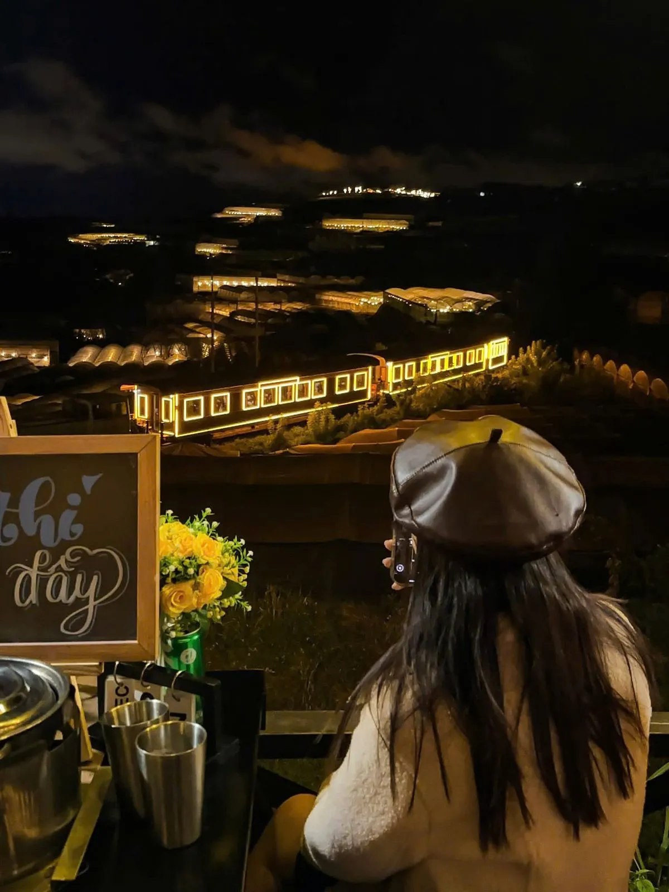
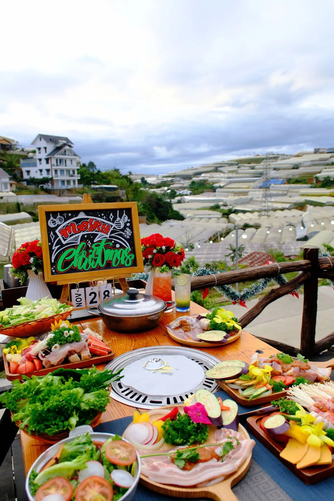

1. Trạm Dừng Chill — Bò Mỹ nướng than hoa view hoàng hôn
Trạm Dừng Chill phục vụ bò Mỹ, bò Úc nhập khẩu chất lượng cao, thái lát vừa ăn, nướng trên than hoa thơm phức. Thịt bò tươi hàng ngày, không đông lạnh lâu. Set bò nướng cho 2 người từ 250K, bao gồm 3-4 loại thịt bò và rau củ nướng kèm.
👉 Đặt bàn thưởng thức bò nướng

2. Korean BBQ Đà Lạt
Quán bò nướng kiểu Hàn Quốc, thịt bò ướp sốt bulgogi chuẩn vị. Có thêm kim chi, banchan đi kèm. Giá từ 180K/người, set cho 2 người từ 350K.

3. Bò Tơ Tây Nguyên
Chuyên bò tơ nuôi tại Tây Nguyên, thịt tươi ngọt tự nhiên. Nướng trên bếp than kiểu dân dã, chấm muối ớt chanh. Giá bình dân, set từ 150K/người.
4. Steak & Grill Đà Lạt
Quán nướng kiểu phương Tây, chuyên steak bò các loại. Bò Wagyu, ribeye, tenderloin nướng vừa tới. Phong cách sang trọng, giá từ 300K/người.
5. Bò Nướng Lửa Than
Quán bình dân chuyên bò nướng than hoa, thịt bò tươi từ lò mổ sáng. Không gian dân dã nhưng đồ ăn ngon. Giá từ 120K/người.
Kết luận
Muốn ăn bò nướng Đà Lạt ngon + view đẹp? Trạm Dừng Chill là sự kết hợp hoàn hảo giữa chất lượng thịt bò và trải nghiệm ngắm cảnh. Đặt bàn ngay!